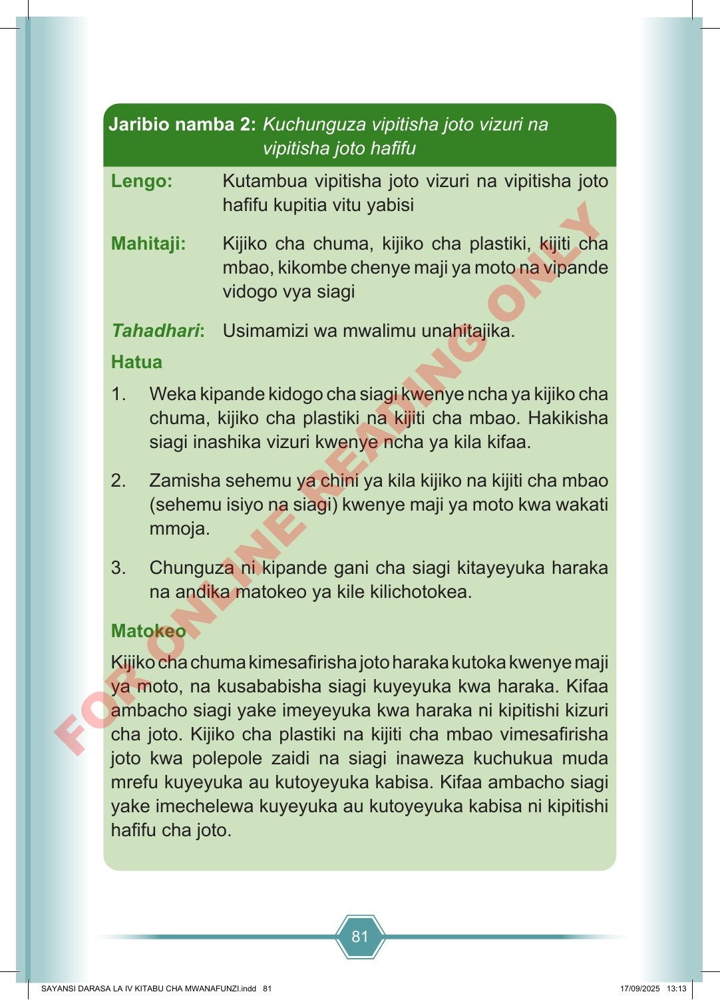

81 Lengo: Kutambua vipitisha joto vizuri na vipitisha joto hafifu kupitia vitu yabisi Mahitaji: Kijiko cha chuma, kijiko cha plastiki, kijiti cha mbao, kikombe chenye maji ya moto na vipande vidogo vya siagi Tahadhari: Usimamizi wa mwalimu unahitajika. Hatua 1. Weka kipande kidogo cha siagi kwenye ncha ya kijiko cha chuma, kijiko cha plastiki na kijiti cha mbao. Hakikisha siagi inashika vizuri kwenye ncha ya kila kifaa. 2. Zamisha sehemu ya chini ya kila kijiko na kijiti cha mbao (sehemu isiyo na siagi) kwenye maji ya moto kwa wakati mmoja. 3. Chunguza ni kipande gani cha siagi kitayeyuka haraka na andika matokeo ya kile kilichotokea. Matokeo Kijiko cha chuma kimesafirisha joto haraka kutoka kwenye maji ya moto, na kusababisha siagi kuyeyuka kwa haraka. Kifaa ambacho siagi yake imeyeyuka kwa haraka ni kipitishi kizuri cha joto. Kijiko cha plastiki na kijiti cha mbao vimesafirisha joto kwa polepole zaidi na siagi inaweza kuchukua muda mrefu kuyeyuka au kutoyeyuka kabisa. Kifaa ambacho siagi yake imechelewa kuyeyuka au kutoyeyuka kabisa ni kipitishi hafifu cha joto. Jaribio namba 2: Kuchunguza vipitisha joto vizuri na vipitisha joto hafifu SAYANSI DARASA LA IV KITABU CHA MWANAFUNZI.indd 81 SAYANSI DARASA LA IV KITABU CHA MWANAFUNZI.indd 81 17/09/2025 13:13 17/09/2025 13:13 F O R O N L I N E R E A D I N G O N L Y